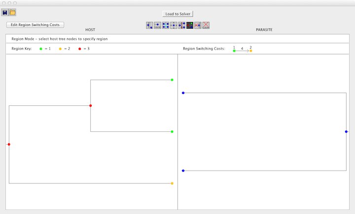

How to Use Jane 4
To use Jane, begin by downloading the .zip file available from the main page.
Once you have unzipped it, there will be a jar file in the Jane folder. To
run Jane, use the command java -jar Jane.jar. On some machines, you can
simply click or double-click on the Jane.jar icon.
There is also a command-line version of Jane included in the download. This version of Jane is particularly useful for conducting large-scale experiments controlled by scripts. More details on this option are given at the end of this tutorial in the CLI section.
If Jane crashes on your computer, see the F.A.Q. for help.
Contents
- The Jane Interface
- Tree Builder Tutorial
- The Settings Menu
- Solve Mode Tutorial
- Solution Viewer Tutorial
- Stats Mode Tutorial
- Command Line Tutorial
The Jane Interface
When the graphical version of Jane is opened, the Main Window is displayed.
The Main Window consists of the parts listed below.
- Problem Information Panel : contains basic information about the problem instance to be solved, listing the name of the tree file and the number of tips on the host and parasite trees.
- Actions Panel : contains the estimated time for a Solve or a Stats run, and the current
status of Jane. The functionality of Jane is also governed from here, using a pair of
buttons:
- Estimate Time Button : when the user clicks the Estimate Time button, Jane will perform some sample runs to determine the approximated running time. Note that estimating running time can also take some time.
- Go Button : clicking Go will perform the computation, solving for the best embedding in Solve Mode or the statistics in Stats Mode. When estimating time or performing a Solve or Stat run, the user is not permitted to configure options or perform other runs.
- Solve Mode and Stats Mode Tabs : the tabs allow the user to switch between the two modes. The configuration of each mode will be described later. Jane is set to Solve Mode by default.
- Menu Bar : the menu bar allows the user to modify other settings and take other
actions.
- File Menu allows the user to load trees used to solve the problem instance or perform statistical tests, and to quit the program.
- Settings Menu allows the user to set advanced parameters.
- Solve Mode Options Menu allows the user load a timing file and to add the solution to that timing to the Solution Table, clear the Solution Table, and set the number of optimal solutions kept and displayed per solve.
Tree Builder Tutorial
Getting Started with the Tree Builder
When getting started, the user can either build a tree from scratch or load in a tree in .tree or .nex format. The tree builder has the ability to load in both complete and partial trees. To load a tree the user can either select "Open..." from the File menu or click the open button in the top left corner and then navigate to the desired tree. When saving the tree, the user has the option of saving in either .tree or .nex formats. However, the .nex format does not support multi-host parasites or region information.
Add Child Mode
To add nodes to the tree the user can select the "Add Child" button to switch to Add Child Mode. Once in Add Child Mode the user can click on any node to add a child. If the node is currently a tip this will add two children to the node. If the node is an internal node, it will add one additional child with each click to create a polytomy.
Label Mode
To assign names to the nodes the user can switch to Label Mode by selecting the "Labels" button. Once in Label Mode simply click the node you would like to name and type the name in the box that appears. Jane does not support the naming of internal nodes. Additionally, integer names are not permitted.
Link Mode
To create a tip mapping between the host and parasite trees the user can switch to Link Mode by selecting the "Add Link" button. To add a link the click one of the nodes and drag to the node in the other tree or click one node and then the next. When clicking on a tip node in Link Mode only that node's links will appear in blue and all other links will appear greyed out. Jane supports both failure to diverge events and multi-host parasites so parasite and host nodes can have multiple links.
Note: Multi-host parasites are only supported in .tree files.
Move Mode
Move Mode can be used to clear up trees that contain a lot of crossing or cluttered links. Once in Move mode the user can swap nodes vertically by selecting an edge and dragging up or down to uncross links. If the host and parasite tips are too close together to clearly distinguish the links the tips can be moved apart by placing the cursor in line with the tips and dragging left or right until the desired spacing is reached.
Time Zones Mode
To add time zones simply select the "Time Zones" button and enter the desired number of time zones. If after adding time zones you want to change the number of time zones click the "Change Number of Time Zones" button in the upper left corner and enter the new number of time zones. After entering the number of time zones, the time zones will be separated by dashed red lines. To set the time zone for a node, drag the node into the desired time zone. Tips must occur in the last time zone. Each node will have a red arrow on either side, drag these arrows into another time zone to set a region of time zones for the node.
Note: All time zones must be used in the host tree.
Regions Mode
To add regions switch to Regions Mode by clicking the "Regions" button. Once in Regions Mode, drag to select a set of nodes and enter a number for the region. When a node is assigned a region, the region will appear in a key above the trees and the node will change to the corresponding color. Once regions have been assigned, region switching costs can be set by selecting the "Edit Region Switching Costs" button and enter the desired cost. Any switch for this region will be the sum of the host switch and duplication cost already set in Jane and this cost. A cost of i can be used to prevent all host switching between these regions. Region switching cost will be displayed next to the region key.
Note: All nodes default to Region 0 and when assigning regions they must all be in Region 0 or a region greater than 0.
Note: Regions are not supported by the .nex format.
Erase Mode
Erase Mode can be used to remove and node or link. Simply switch to Erase Mode using the "Erase" button and click the node or link you would like to remove. Removing an internal node will cause its descendants and links they have to be removed. If one child of a node with two children is removed the node will also be removed.
Clear Mode
Clear Mode can be used to remove an entire tree. Simply click either the parasite or host tree to clear that tree. If both trees are cleared, timezone and region information will be cleared as well.
Load to Solver
Once the trees have been completed, the "Load to Solver" button can be used to save the file and open it in the main Jane interface. If you have not yet saved the file you will be prompted to do so and then the file will open in the main interface where it can be run in Solve Mode or Stats Mode.
Back to TopSettings
Set Costs
To change the costs of events, select the "Set Costs Option in the Jane Settings menu. As seen in the image below, the menu has the events listed with a box next to each. To change the cost of an event, simply enter the desired cost into the box next to the event name, or use the arrows next to the box.
Jane also supports solving for ranges of costs. To utilize this function, select the "Range Costs" tab as seen in the image below. This tab allows the user to select the range of costs Jane should find solutions for. Note that Jane's running time will increase based on the number of possible combinations of costs that can be made from the ranges given.
The "Region Costs" section at the bottom of the "Set Costs" dialog allows the user to change the cost of Host Switch events between regions if the tree being solved has region information.
Set Host Switch Parameters
The "Set Host Switch Parameters" option of the Settings menu allows the user to set a maximum distance on host switches. Jane will not allow a host switch to occur if the distance between two nodes along the edges of the tree is greater than the given value.
Set Polytomy Parameters
Detailed in Polytomy Parameters .
Set Advanced Genetic Parameters
- Selection Strength This parameter determines how much we trust the fitness function. A value of 1 indicates that we should build successive generations with only the best individuals from previous generations, a value of 0 means we choose randomly from prior generations without consulting the fitness function, and a value in between means we randomly select from prior generations but favor the best solutions.
- Mutation Rate This parameter determines how often we mutate timings in our genetic algorithm. A value of 1 means we mutate after every reproduction, a value of 0 means we never mutate, and a value between gives the rate of mutation.
Solve Mode
In Solve Mode, the user can use Jane to find a good embedding of the parasite tree onto the host tree. When Jane is run, Solve Mode is selected by default. Solve Mode may be reached from Stats Mode by simply clicking Solve Mode tab on main window. Click the Go button in the Actions box to run the genetic algorithm and search for a good embedding. For a large tree file, population, and/or number of generations, it is advisable to approximate the running time by clicking Estimate Time.
Getting Started Solving
The Problem Information box on the upper left of the screen contains information about the trees to be solved, including the file name and the number of tips on each tree. Other parameters can be viewed and modified via Settings button on the top bar.
To choose a tree file to be solved, go to File > Load Trees and choose the desired
file. Jane supports two formats: .nex files and .tree files. A more exact
specification of file formats used by Jane is described in detail on the
File Formats page.
In order to change the problem parameters, solutions from previous runs must be removed from the table. Jane will prompt you to clear the table before you can change the problem parameters. To see the current problem parameters without clearing the table, choose No at this prompt and you will be presented with a read-only view of the current parameters. You can also clear the table manually by going to Solve Mode Options > Clear Table.
|
To set the costs for the cospeciation, duplication, host switch, loss, and failure to diverge events, go to Settings > Set Costs then input the costs of each of the events (the costs must be integers). Jane uses an edge-based cost model as the default cost evaluation scheme. Check the Use Node-Based Cost Model box to make Jane evaluate costs based upon a node-based cost model. For more information about the event types, event costs, and Jane's cost models, view the Cost Model and Event page. |
|
|
Jane supports "preferential host switching" in two different ways. One way is to annotate the input file with HOSTREGIONS and REGIONCOSTS information (see the file formats page for details). This method allows the user to group the host nodes into any number of "regions" (a region may be a geographical region, but "region" here is used metaphorically as simply a group) and then specify different host switch costs between each pair of regions. For example, the user may wish to have a relatively high cost for switching between distantly related species and a lower one for more closely related species. Any number of different host switch costs can be specified this way. A second simpler mechanism is to prohibit host switches from a take-off site to a landing site that exceed some specified distance. The distance from one edge of the host tree to another edge of the host tree is defined to be the number of nodes on the unique path between those edges. Thus, for example, two edges with distance 1 are sibling edges. Limiting host switch distance inhibits "long" host switches between very distantly related species. If this value is set to -1 then host switch distance is unlimited. The maximum host switch distance can be set by going to Settings > Set Host Switch Distance Limit. Note that adding a limit to host switch distance makes Jane switch to a somewhat slower algorithm. |
Configuring Genetic Algorithm Parameters
Jane finds low-cost associations between the host tree and the parasite tree by generating many random relative timings of the internal nodes of host tree and solving for the optimal association, then applying a genetic algorithm to modify timings and generating new host timing candidates.
In a genetic algorithm, there are two main control parameters called "population size" and "number of generations". These are parameters related to the inner workings of the algorithm and have nothing to do with the populations being studied in the host/parasite system. In a nutshell, the "population size" is the number of different solutions being considered at each iteration of the algorithm and the "number of generations" is the number of iterations performed by the algorithm as it seeks a good reconstruction of the parasite tree onto the host three.
Choosing larger values for these two parameters generally leads to better solutions, up to some point where increasing the values further makes no difference. However, increasing these parameters will cause computation to take more time. While some experimentation with these parameters will be required of the user, see the parameters page for more information and advice about selecting appropriate values.
The population size and number of generations can be set by using the slide bars or inputting the number manually in the Genetic Algorithm Parameters box under the Solve Mode or Stats Mode tab. Note that these parameters are separate for each mode, so changing the parameter in one mode will not affect the parameters in the other mode.
|
The Settings > Set Advanced Genetic Parameters can be used to set the mutation rate and the selection strength used in the genetic algorithm. The mutation rate is a value between 0 and 1, with 0 being never mutate and 1 being always mutate. The selection strength has minimum value 0, which corresponds to a randomly selected population, and there is no upper bound for this parameter. Most users find that the default parameters work well and choose not to adjust the values of these parameters. |
The Solution Table
The Solution Table displays the list of information about each solution found in Solve Mode, including the number of occurrences of each event and the total cost.
After clicking Go in Solve Mode, Jane finds new solutions. The best solutions found will be added to the Solution Table.
|
Because a large number of different best solutions may be found in every run, the user can specify the number of solutions saved by going to Solve Mode > Adjust Number of Solutions and entering the maximum number of host timings to be kept for each run. |
To add a solution from an existing host timing file, go to Solve Mode Options > Add Host Timing to Table and Jane will find the optimal association with the given timing information and add this solution to the table.
To view a solution, simply double click at a solution in the table. A new Solution Viewer window will pop up. The usage of Solution Viewer is described below. To clear the table, go to Solve Mode Options > Clear Table to erase all information in the table.
Back to TopSolution Viewer
To open a Solution Viewer, simply double-click on one of the solutions to bring up a Solution Viewer, like the one shown below.
Viewer Basics
In the Solution Viewer, the host tree is drawn in black and the parasite tree is drawn in blue. There are five types of events: cospeciation, duplication, host switch, loss, and failure to diverge. For more information about Jane's cost models, see the Cost Model and Event page.
The Solution Viewer will render each event as follows:| Cospeciation: | A Cospeciation is marked by a hollow colored circle. | |
| Duplication: | A Duplication is marked by a solid colored circle. | |
| Host Switch: | A Host Switch is marked by a duplication, with an arrow following the trajectory of the switching species. | |
| Loss: | A Loss is marked by a dashed line. | |
| Failure To Diverge: | A Failure to Diverge is marked by a jagged line. | |
| Additionally, if the mouse cursor is hovered over a parasite node, the event type will appear. |
Notice that each node in the parasite tree is marked with a colored circle. The colors indicate the existence of other possible locations for the association. A green node means there is a location of lower cost where the parasite node and its descendants may be mapped. A yellow node indicates that there is another location of equal cost, and a red node means that all other locations it may be mapped to are of higher cost. To view this information from within Jane, go to Options > Show Key while in the Solution Viewer.
Each parasite node can be dragged to a new position, as long as that position leads to a possible embedding of the parasite tree on the host tree without requiring changes outside of the sub-tree rooted at the dragged node. When dragging a parasite node, segments of the host tree will highlight in the colors corresponding to the change in cost when the parasite node is moved to that location on the host tree (see the image below). Grey segments indicate that the parasite node cannot currently be moved to that position. Dragging that node to its current location will also move its descendants to their respective optimal locations.
In some situations there may be many lower cost locations on the host tree to move a specific parasite node and it may be useful to know the location that will result in the overall lowest cost. Simply double-clicking on a parasite node will simulate a "drag and drop" of that node to the location of lowest cost.
As a node is dropped on a location, nodes that are descendants of that parasite node will be placed in their optimal positions automatically. If you wish to extensively modify a particular embedding, it is advisable to work your way "down" the tree, starting at the parasite root node. Otherwise, modifications done near the bottom of the parasite tree will be undone when an ancestor of that node is moved. The cost at the top of the window will change according to the modifications.
Support Values
Jane 4 is capable of providing Support Values in the solution viewer. Support values give the percentage of solutions in which a specific event of the parasite tree is mapped to a given location on the host tree. Below is a small example of this functionality. In this example, 8 percent of solutions have a host switch from the bottom host edge to the top host edge, and 22 percent have a host switch from the top host edge to the middle one.
To view support values, select the menu option "Show Support Values" as seen in the image below. Note that the time it takes to calculate support values will vary based on the size of the trees. Additionally, support values may vary slightly from run to run due to the method of calculation.
Jane is currently limited to providing support values for unmodified solutions.
Viewing Polytomies
Jane 4 has the ability to find solutions for polytomic trees by automatically resolving them. Jane's algorithm attempts to find the best solution from among all possible resolutions.
Host polytomies in Jane are displayed with edges in purple as shown below:
Parasite polytomies are displayed with edges in pink, as below:
There are a few options that govern Jane's handling of polytomies that are covered in detail on the page Polytomy Parameters.
Step-By-Step Guide to Modifying Solutions
| We now examine a step-by-step example of interacting with the Solution Viewer. We start with the optimal embedding of the two trees (i.e. the initial state upon opening the viewer). | |
| Step 1: The parasite root node is being moved to a new location. The entire subtree of the moved node will now be optimally embedded onto the host tree. Since the moving node happens to be the root, the entire parasite tree will be adjusted. | |
| Step 2: A different parasite node is now dragged to a new location. Notice that only the subtree of the moved node is rearranged, and all of the other parasite nodes stay at the same location. | |
| Step 3: The root of the parasite tree is moved once again. Note that this step undoes the changes made in "Step 2". | |
| Step 4: If a node is double-clicked, it will move to its optimal position (by only changing the location of itself and its subtree). In this step, the root of the parasite node is double-clicked, which returns the tree to its optimal embedding onto the host tree (see first picture). |
Saving Solutions
Jane allows the user to save solutions to a file for later use. Jane works by considering "timings" of the nodes in the host tree where a timing is simply an ordering of the speciation events (nodes) of the tree. From a given timing, Jane can very quickly find an optimal solution for that timing. Each solution that Jane presents in the Solution Viewer window is a different timing among the best solutions that Jane can find.
If a solution is of interest, its corresponding timing can be saved (without the manual changes made to the parasite tree within that timing) by going to File > Save Timing inside the Solution Viewer window. When the corresponding problem instance is loaded in the main window, the timing can be reloaded and Jane can reconstruct the corresponding solution. To do this, go to Solve Mode Options > Add Host Timing to Table, open the timing, and it will be added back into the list of solutions at the bottom of the Solve Mode tab. Command-line users can save the best timing found by using the -o switch with the name of a file in which to store the timing. It should be noted that the timing files are written in a human-readable format so that they can be modified manually if desired.
Back to TopStats Mode
In Stats Mode, Jane generates samples of random parasite trees or tip mappings and then solves these samples to obtain their cost. These costs are used to perform statistical analyses. To use the statistics mode, simply select Stats Mode tab in the main window.
The problem instance and genetic algorithm parameters can be configured in the same fashion as in Solve Mode. Note that the number of generations and population size for the genetic algorithm are independent between Solve Mode and Stats Mode; the values used in Solve Mode are not carried over to Stats mode and vice versa.
Configuring Randomization Tests
|
In the Statistical Parameters box, the Sample Size (the number of random problem instances to be generated and solved) can be set. To include the original problem instance in the sample, check the Include Original Problem Instance box. Since the computation required to perform the randomization tests can be substantial for large trees, it may be desirable to distribute the work over multiple computers by running a small number of samples on each machine. Jane is multithreaded and will use all of the cores available on each machine. Checking the "include original problem instance" box will solve the original problem instance in addition to the random ones and generate comparison data. This option is included in the event that the user wishes to split the randomization tests over multiple computers. On one computer, the original problem instance will be evaluated in addition to some randomized instances. On the other computers, only randomized instances need to be solved. Note that if you choose to save the sample costs, the original problem instance cost will not be included in these. Thus, make sure you write it down if you need it later! |

|
Random Tip Mapping: In this method, the tip mappings are permuted randomly. Each host tip will have the same degree (number of associated parasite tips) as the original problem instance. For example, if in the original problem instance there are two host tips each with degree two, the randomized problem instance will maintain this characteristic after randomization. If all parasite tips have a degree of one (that is, each parasite is associated to exactly one host) then the randomized tip mapping will be selected uniformly from all possible mappings that maintain the host tip degrees.
If any parasites have degrees greater than one then the randomized mapping will preserve the host degrees and will ensure that each parasite has a degree of at least one. However, the mapping will no longer be selected uniformly from all such mappings but instead the probability of an edge appearing between a host and a parasite is equal to the degree of that host divided by the total number of parasites.
- Random Parasite Tree: In this method, random parasite trees are generated according to the Yule model. The Yule "beta" parameter may be specified to control the balance of the tree. The lower bound on this parameter is -2.0, which generates completely unbalanced trees, and there is no upper bound for this parameter. The default value is set to -1.0. For more information about the Yule model see the paper by Steel and McKenzie.
Viewing Randomization Results
After clicking Go to perform statistical analyses, the resulting cost distribution is displayed in the histogram on the bottom left of the Stats Mode tab, and basic Statistical values are shown on the bottom right of the Stats Mode tab.
Histogram:The Histogram section will show the result of the run in histogram format, where the horizontal axis represents the cost of the sample and the vertical axis represents the number of samples with the corresponding cost. If included, the cost of the solution to the original problem instance will appear as a red dashed line. Click Save as Picture to save the histogram as a portable network graphics (.png) file format, or click Show Histogram in New Window in order to see the histogram in a larger, separate window.
Statistics:
The Statistics window contains statistics obtained from the randomization tests, including the mean, standard deviation, and, if the original problem instance is included, the percentile rank of the original compared to the random. The results of the runs can be saved as a comma separated values file by clicking Save Sample Costs. Excel and most other popular spreadsheet applications can open this type of file. Note that even if you check the include original problem instance check box, the cost for the solve of the original problem instance will NOT be saved! You need to write it down yourself.
Back to TopCommand Line Interface
Jane can be invoked from the command line rather than by launching the graphical
user interface as follows. Note that treefile refers
to the name of an input file in either .tree or .nex formats.
- On Windows:
jane-cli.exe treefile- On Macintosh and Linux:
./jane-cli.sh treefile- On any platform if you download the platform independent JAR:
java -cp Jane.jar edu.hmc.jane.CLI treefile
The -help flag may be used to get more information about the command line options. These options are also summarized below:
By default, Jane will solve for associations of trees described in treefile, then output the best host timing found and the association information for each parasite node. Stats Mode can be invoked by using -stats option; Jane will output the statistics obtained from the generated samples. There are options available for configuring Jane as listed below:
| Option | Description |
| -help | Prints help message |
| -V | Turns on verbose output - Jane will report the minimum cost and number of host timings found at each generation, rather than just at the end. |
| -C | Causes Jane to evaluate costs using a node-based cost model rather than the default edge-based cost model. |
| -c <cosp dup switch loss ftd> | This defines the cost vector to use; i.e. -c 0 1 2 3 4 would cause cospeciations to cost 0, duplications to cost 1, host switches to cost 2, losses/sorting to cost 3, and failures to diverge to cost 4 (default: 0, 1, 1, 2, 1). |
| -m <value> | Sets the mutation rate. Appropriate values fall on the interval [0, 1] with 0 being never mutate and 1 being always mutate (default: 0.6). |
| -p <value> | Sets the initial population size (default: 30). |
| -i <value> | Sets the number of generations that the genetic algorithm should run (default: 30). |
| -s <value> | Sets the selection strength. 0 is completely random and there is no upper bound (default: 0.8). |
| -S <value> | Sets the maximum host switch distance allowed. -1 causes the distance to be unlimited (default: -1). |
| -stats <samplesize> | Switches Jane to Stats Mode and sets the number of samples to <samplesize>. By default, the tip mapping is randomized. |
| -I | When in stats mode, also does a solve of the original tip mapping/trees and prints data comparing it to the random sample. Note that the sample distribution will NOT include the cost of this solution. -stats must be invoked first. |
| -B <value> | Switches to parasite tree randomization using the Yule model where the value is Yule parameter. -stats must be invoked first. |
| -o <filename> | For Solve Mode, outputs the best host timing file to a file called <filename>. This file can then be viewed in graphical version of Jane. For Stats Mode, outputs the sample costs as a common separated value file (generally .csv or .xls) to a file called <filename>. |
| -silent | This causes Jane to produce absolutely no output to the console (though it will still write any files that are specified). Any operation that would normally print something out will still run, but it won't print anything out. |